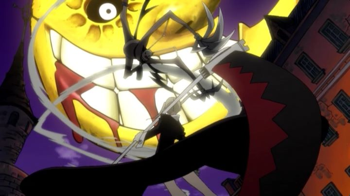

There is a genre of anime called "Shonen" (or "Shounen"), and it generally refers to action shows targeted towards young teenage boys. This is arguably the most popular genre in anime, as many popular, long-running shows fall under this classification. Many anime fans were introduced to anime through shonen, and many fans have only watched shonen, typically "Naruto," "Bleach," "One Piece" or "Fairy Tail." On the other hand of the spectrum, anime fans that have watched a lot of anime (and through experience see it as more of a respectible form of art rather than purely entertainment) do not often watch shonen. This comes from three main reasons: 1) to make money from a popular show, most shonen anime will continue for over 100 episodes ("One Piece" for example is a shonen anime with over 800 episodes and counting), so a big investment in time is required to watch it all. 2) to fill in all those episodes, many will be empty "filler" episodes, meant to artificially lengthen the show until major plot points can continue, and this strategy can feel like a waste of time to most viewers. 3) Even when the plot is in focus, to have such a long-running show, the cast of characters and their backstories must be huge, and typically most of these side characters are simply decoration (reducing in design quality or depth as the show adds them) that aren't significant to the show - yet the viewer needs to pay attention to all of it just in case. These issues aren't just subject to Japanese shonen anime, but can also be seen in most American children's shows and comics. I like Batman and Spiderman for example, but wouldn't get into reading the comics because there are thousands of them (it's impossible to read them all or to know where to jump in), and each new comic seems to include characers from other arcs without reason anyhow.So shonen can be great fun, but are typically the junk food of anime, and most of its problems come directly from its episode count. Aren't there any shonen anime that don't have so many episodes? Sure there is, although the definition of "shonen" seems to vary greatly online (I've seen most users simply recommending random action shows, for which there are thousands to narrow down). One that I've heard recommended was the 2008 anime "Soul Eater," clocking in at 51 episodes, based off a now finished manga. An ending is in sight. Also, "Soul Eater" has a unique setting and atmosphere inspired by Halloween, making this the closest thing to an anime adaptation of "The Nightmare Before Christmas." I was intrigued."Soul Eater" takes place in an alternate world where Lord Death (aka. THE Grim Reaper) protects the world from "Keshin," evil demons created when souls become tainted with evil desires. To help combat this threat, Death runs a school to train children to eventually join his army. Death Academy teaches two classes of students: Weapon students, who can transform into powerful weapons, and Meisters, the students who can weild said weapons. Both are kind-of useless without each other, so students are paired up quickly until they graduate. Maka and Soul are the two main characters of the show, as well as Black Star, Tsubaki, Death the Kid, Liz and Patty. While training to graduate, serious forces conspire to threaten the entire world, and these students must prepare themselves for the greatest fight of their lives.As far as the story and characterization goes, "Soul Eater" owes everything to its two main characters. Unlike most other shonen anime, Maka and Soul are both incredibly likable, multi-dimensional kids. Their relationship as friends and partners are tested to serious points by the second half of the show, and many of the best parts involve their story thread. The other characters are a bit more of a hit or miss. Black Star in particular is about as annoying as any other anime character I've seen, and both he and his partner Tsubaki are clearly designed as rip-offs of Naruto characters (exactly why ninjas are in a Halloween-themed anime is beyond me).  About that Halloween stuff. The production team nailed that in both the characters and the design of the setting. The first episode opens with a fight in the alleyway of a cobblestone town at night while a grinning crescent moon looks over them. The school features teachers that resemble zombies, witches, Frakenstein, and more. The story eventually includes subplots with an impish-devil-like creature. While generally upbeat and funny , the story isn't afraid to get dark, and the action scenes have plenty of violence and blood to meet with that. It isn't necessarily groundbreaking as a story, most other shonen shows will have similar beats. But it is still effective and fun to watch, and the Halloween theme is extra icing on the cake (unless you don't like the scary holiday, in which case this show might not be for you). The typical fun of a shonen is in place, but the biggest selling point is the visuals. The backgrounds own that Halloween theme, and the character designs are particularly unique. It doesn't always hit: later side characters look ridiculous, and Lord Death himself looks like Gumby from the 1980's purely for a comedic effect. The animation is a cut above, with moving cameras and energetic choreography. Some shots, including the opening animations, are beyond what any anime studio would dare attempt, even a decade later. The music, espeically the catchy opening and ending themes, are fantastic. Overall, Studio Bones did an incredible job that surpasses the look of other shonen on almost every level. It's a shame they don't work with this genre often (the only other shonen I can name from them is 2016's "My Hero Academia," which is receiving similar praise). Overall, "Soul Eater" gets a lot right, utilizing the strengths of the shonen genre, but still suffering from many of its weaknesses. I mentioned "shonen" a lot, and whether or not you would like this show hinges on whether you are looking for that type of show to begin with. For my money, it is the first shonen I would reach for, especially since Funimation released the series in a complete boxset you can easily get for under $40 in America. If you're looking for a shonen to try for the first time, make it this one. If you are already a fan of "Naruto" or "One Piece" are are looking for something new, let "Soul Eater" show ya how it's done.
- "Ani" More reviews can be found at : https://2danicritic.github.io/ Previous review: review_Song_of_the_Sea Next review: review_Space_Dandy